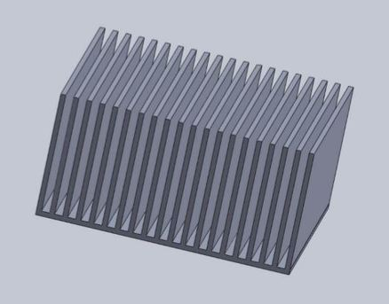
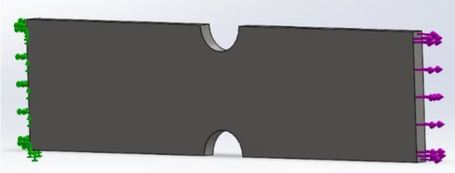
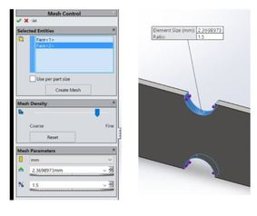
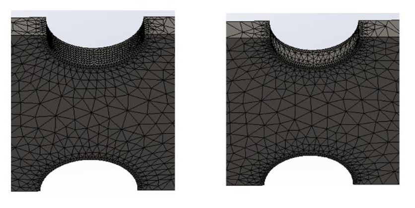
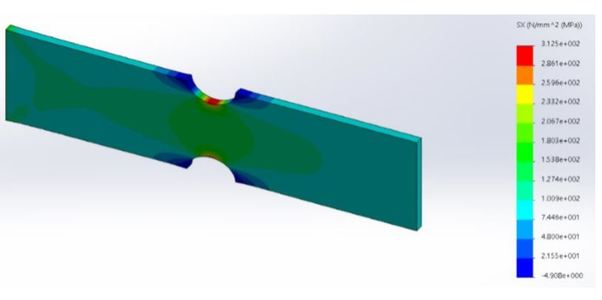
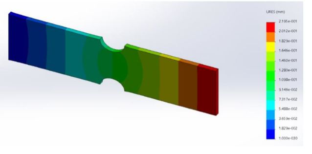

Automated Underwater Vehicles

As part of the mechanical engineering team, I am working on the product development of an Autonomous Underwater Vehicle. We are designing various units of the AUV and running simulations for safety management on each component of the AUV. We are working with SolidWorks to design and assemble the modules, and completing finite element analysis after designing the pieces.
I truly enjoy this internship because I can apply my theoretical knowledge in the practical field, gaining hands-on experience. Part of the job is innovating existing designs, checking stability with physical experiments as well as FEA. Safety is one of the main concerns, especially since we are quickly finalizing designs and manufacturing our own components. My responsibilities include ordering parts based on the design, balancing quality and cost. I have also assembled Sherline Mill 2000 and learnt a lot during the process, such as its dependency software Mach3. Since no one in our team was familiar with Mach3, I researched and taught myself with assistance from another team member. Eventually, we manufactured our first part using Sherline Mill, which was an amazing experience. I look forward to becoming familiar with machine learning and continuing to improve my manufacturing skills.
AIAA Competition
I am also the secretary of the American Institute of Aeronautics and Astronautics’ CCNY Chapter. I was part of a team that participated in the Cessna Aircraft Company/Raytheon Missile Systems - Student Design/Build/Fly Competition 2015-2016 arranged by the AIAA. The goal was to build an unmanned radio controlled aircraft that will perform a specific set of tasks, such as carrying a Gatorade bottle as payload. I was part of the manufacturing team working on the skin of the aircraft. We used construction foam for the mold and manufactured the skin by reinforcing carbon fiber in epoxy resin. Then, we sanded the skin to make the design more aerodynamically efficient. In this year’s competition, I will be working with the design and propulsion team in addition to my responsibilities from the previous year.
Frame Tune Mass Damper
This is a design for a damping system for a tall building. I named it as the Spring-Frame damping system. This damping system has been designed based on the system used in the Osaka Prefectural Government Sakishima Building. The design was modified by adding wheels, a different numbers of frames, and springs in different directions. The weight is surrounded by frames which restrict the movement of the weight during an earthquake. The outer frame is fixed with the floor while the inner frames are flexible and connected with joints and springs, making a rectangular shape. The purpose of adding more than one frame surrounding the weight is to resist different frequencies of earthquake. Each rectangular frame is connected with the adjacent frames as well as the weight by springs. A roller has been added on the bottom of the weight that is connected to the weight by a metal rod. It helps the weight move towards the frequency which gives the frame more flexibility.
Finger Mouse Design
This is one of my personal projects. I was inspired to do this while I was working on a design project for a finger mouse. I applied reverse engineering to understand the limitation of the design. Thus I decided to develop a wireless design that will also be more user friendly. This is the initial solid model of the project. The device will be a Bluetooth optical mouse with a range of 10 meters. Reverse engineering of an existing similar wired mouse was applied to help create an innovative design, specifically with the addition of a built in laser pointer.
Reduction Gear Box
Reduction gears are used to decrease the rotational speed of the input shaft to a slower speed as compared to the output shaft. In certain parts of a mechanical system that consist of gears and shafts, decreasing output speed helps in increasing the torque. These reduction gears aide in decreasing the speed of the engine, hence, its usefulness in trucks, boats and automobiles. Reduction gears make a closed system. Since the input and output power remain the same, the speed of the output decreases while the torque proportionally increases. The highly accurate gears were produced by a specific methodology. The reduction gearbox is light in weight /& convenient to install. It has a compact structure that is corrosion resistant and has excellent thermal conductivity to the housing. Moreover, complete pitches of the gears are precisely tested and both the internal /& external gears were cut by this process.

We designed a reduction gear box and manufactured it as a part of the class project. We learnt how to design the gear box using SolidWorks and manufacture it using HSMWorks. This process taught us about cost management as well as how to use various manufacturing tools (we used a CNC machine, bend saw, hole saw, etc. to manufacture the gear box).
Heat Sink Design
Computer processors often reach extremely high temperatures. Heat sinks are installed in order to cool the device by aiding in the dissipation of high temperature. As a result, internal damage due to high temperature can be avoided. Our goal was to end with a temperature lower than 55 degrees celsius, starting with an initial temperature of 120 degrees celsius. Without modifications, the temperature dropped to 80 degrees celsius which did not meet our goal. However, in free convection with our new design, the temperature dropped to 48 degrees celsius. Thus the design we did satisfied our cause for free convection. Thanks to specific spacing between fins, the flow could become turbulent, which made the fins more efficient.

This is the engineering drawing of the design. Mat lab was used to calculate the fin numbers. I used SolidWorks for modeling. The design was manufactured and tested. The system was autonomous and all of the equipment that was required was brought at a value lower than $25, which was the designated cost limit. This heat sink design proved to be efficient and successful as expected. The decrease in temperature to 48°C proved that the heat sink worked as well as anticipated.
Finite Element Analysis
The finite element method is a dominant strategy to conduct structural engineering. The displacement formulation of the finite element method is used in solid work simulations in order to calculate displacement, stress and strain. The purpose of this study was to check the validity of a FEM solution as well as explore the effects of element size and order on the stress and displacement results. In this case, final element method was used to investigate the validity of stress and displacement along a plate with two semicircular notches for an external load.
 I started conducting studies with the draft quality element and changed the mesh type using different element sizes. Local refinement was processed at the notch surface and edges to check the validity of stress concentration in that area. Processing local refinement was an interesting challenge.
Meshing
Stress along the plate
Displacement along the plate
It is not possible to get accurate result using SolidWorks, but it does give us a good approximation of the solution. We can easily estimate the failure load of a building due to an earthquake, or measure the strength of a cyclone using finite element analysis. Sometimes its possible to receive a wrong solution, but it gives us a estimation of possible outcome. Thus, it can be a very useful tool for obtaining estimation for stress and fatigue load for complicated real world problem.
If you want to look at the detailed report, click here.